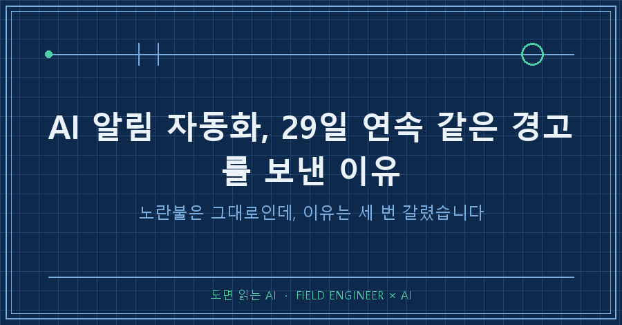
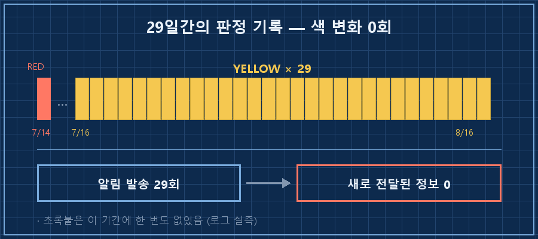
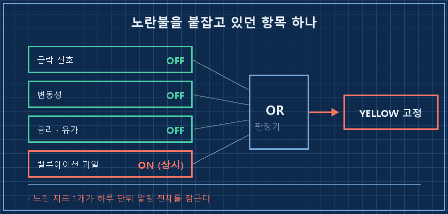
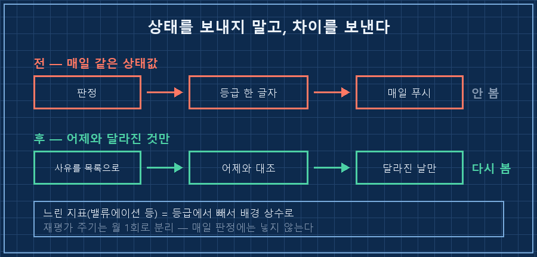

AI 알림 자동화를 만들어놓고 한 달째 안 열어보고 있었습니다.
매일 새벽 4시에 알림이 하나 오는데, 오늘도 노란불이라고요. 계속 같은 색이었거든요.
이 글의 답은 한 문장입니다.
매일 도는 알림은 '지금 상태'를 보내면 죽고, '어제와 달라진 것'을 보내야 삽니다. 상태값은 며칠만 고정돼도 읽는 사람에게서 의미가 사라지거든요. 그런데 대부분의 AI 알림 자동화는 기본값이 상태값 전송입니다.
저는 공장 설비 쪽 일을 열다섯 해쯤 했습니다. 계기판 보고, 경보 뜨면 원인 찾으러 가는 쪽이요.
현장에서 제일 위험한 알람이 뭔지 아세요? 안 울리는 알람이 아니라 늘 켜져 있는 알람입니다. 계속 떠 있으면 사람이 그걸 배경으로 취급해버리거든요. 제가 만든 개인 자동화에서 똑같은 걸 재현하고 있었어요.
전제는 이렇습니다. 2026년 8월 기준이고, 매일 돌면서 로그를 텍스트로 남기는 자동화면 종류를 안 가립니다. 명령은 윈도우 PowerShell과 맥·리눅스 터미널 두 가지로 적었어요.
1. 로그 29개를 열어봤더니 전부 같은 색이었어요
제가 굴리는 AI 알림 자동화 중에 매일 새벽에 도는 게 하나 있습니다. 자료를 모아 요약 문서를 만들고 마지막에 신호등을 띄우는 구조예요. 초록·노랑·빨강 세 단계고요.
어느 날 문득 "이거 마지막으로 색이 바뀐 게 언제지?" 싶더라고요.. 그래서 로그를 전부 뒤졌습니다. 판정 줄만 뽑았어요.
Get-ChildItem .\logs\*.log | ForEach-Object {
$m = (Select-String -Path $_.FullName -Pattern '안전등[^*]{0,20}' |
Select-Object -First 1).Matches.Value
"{0} | {1}" -f $_.BaseName, $m
}맥이나 리눅스면 이 한 줄이면 됩니다.
for f in logs/*.log; do echo "$f | $(grep -o '안전등.\{0,20\}' "$f" | head -1)"; done돌려서 나온 결과를 파일 이름만 바꿔서 옮기면 이랬습니다.
브리핑_2026-08-10 | 안전등: 🟡 YELLOW 유지
브리핑_2026-08-11 | 안전등: 🟡 YELLOW
브리핑_2026-08-12 | 안전등: 🟡 주의 (YELLOW)
브리핑_2026-08-13 | 안전등: 🟡 YELLOW 유지
브리핑_2026-08-14 | 안전등: 🟡 YELLOW 유지
브리핑_2026-08-15 | 안전등: 🟡 주의 (YELLOW)
브리핑_2026-08-16 | 안전등: 🟡 YELLOW 유지7월 16일부터 8월 16일까지 로그가 남은 날이 29일이었는데, 29일 전부 노란불이었습니다. 빨간불이 마지막으로 켜진 건 7월 14일이고, 초록불은 그 사이 한 번도 없었어요.
한 달 내내 알림을 받았는데 새로 전달된 정보는 사실상 0이었던 셈입니다..

2. 시장이 안 변한 게 아니라, 이유가 세 번 갈렸어요
여기서 그냥 "그동안 별일 없었나 보다" 하고 넘어갈 뻔했습니다.
그런데 로그 본문을 열어보니 얘기가 달랐어요. 색은 같은데 밑에 붙은 사유가 완전히 물갈이돼 있었습니다.
| 시점 | 노란불이 켜진 이유 |
|---|---|
| 7월 중순 | 밸류에이션 과열 + 유가 급등(중동 정세) |
| 8월 초 | 위기 신호는 전부 정상, 밸류에이션 과열 단독 |
| 8월 중순 | 밸류에이션 과열 + 소비 지표 둔화(9개월 만의 첫 감소) |
읽는 사람 입장에서 이 셋은 완전히 다른 상황이에요. 지정학 리스크가 걷힌 것도 사건이고, 소비가 꺾이기 시작한 것도 사건이니까요.
그런데 제 알림에는 그 셋이 전부 "🟡 노란불 유지" 한 줄로 압축돼서 나갔습니다.
정보가 없어서 알림이 무의미해진 게 아니라, 요약이 너무 세서 정보가 뭉개진 거였어요.
3. 노란불을 붙잡고 있던 건 항목 하나였습니다
그럼 왜 29일 동안 한 번도 안 내려갔을까요.
8월 5일 로그에 답이 그대로 적혀 있었습니다. 제 AI가 스스로 써둔 문장이에요. 지표 수치만 지우고 옮겨볼게요.
위기성 신호(급락·변동성·금리·유가)는 전부 정상이지만,
밸류에이션 과열이 어제에 이어 지속 →
일관성·보수성 원칙에 따라 GREEN으로 내리지 않고 🟡 유지네 개 축 중 셋이 초록인데, 나머지 하나가 계속 켜져 있어서 등급이 안 내려간 겁니다.
문제는 그 하나가 몇 년 단위로 움직이는 지표라는 거예요. 어제 대비 오늘 바뀔 성질의 값이 아니죠. 하루짜리 알림에 그런 항목을 물려놓으면 등급은 구조적으로 고정됩니다.
현장 말로 바꾸면, 경보반에 "이 공장은 오래된 설비입니다" 같은 상시 조건을 램프로 물려둔 꼴이에요. 틀린 말은 아닌데 그게 켜져 있는 동안 나머지 램프가 안 보입니다.

4. 그래서 알림 규칙을 이렇게 바꾸는 중입니다
손댈 곳은 판정 로직이 아니라 알리는 기준이었어요. 순서대로 적을게요. 미리 밝히면 1단계까지가 오늘 한 일이고, 나머지는 이번 주 작업분입니다.
1단계. 항상 켜져 있는 항목을 색출합니다. (완료)
위의 명령으로 30일치 판정을 뽑고, 사유별로 등장 횟수를 셉니다. 30일 중 28일 이상 등장하는 항목이 범인이에요. 제 경우는 밸류에이션 과열 하나가 29일 전부에 들어 있었습니다.
2단계. 그 항목을 등급에서 빼서 '배경 상수'로 옮깁니다.
지우는 게 아니라 자리를 옮기는 겁니다. 느린 지표는 문서 맨 앞 고정 문단으로 내리고, 재평가 주기를 월 1회로 따로 잡습니다. 매일 판정에는 안 넣고요.
3단계. 매일 보내는 건 값이 아니라 차이로 바꿉니다.
"오늘 노란불"이 아니라 "어제와 같음(29일째)" 또는 "사유 교체: 유가 → 소비 지표"처럼요. 사람이 읽고 행동이 갈리는 건 언제나 차이 쪽입니다.
4단계. 사유를 산문 대신 항목으로 남깁니다.
이게 없으면 3단계가 아예 불가능해요. ["과열", "유가"]처럼 목록으로 저장돼 있어야 어제와 대조가 되거든요. 저는 이번에 로그를 하나씩 눈으로 읽어가며 사유를 셌습니다.. 항목으로 남겼으면 명령 한 줄로 끝날 일이었고요.

확인 방법도 정해뒀어요. 한 달 뒤에 1단계 명령을 다시 돌립니다. 판정이 바뀐 횟수를 세서 30일에 3~5회 근처면 통과, 0회면 그 알림은 아직 죽어 있는 겁니다. 반대로 매일 바뀌면 그건 기준이 너무 예민한 거고요.
AI 알림 자동화는 이 숫자 하나로 살았는지 죽었는지가 판정됩니다. 알림 개수도, 문서 분량도 아니고요.
이런 게 궁금하실 것 같아요
Q. 매일 오는 알림 자체를 없애면 안 되나요?
없애면 기록이 같이 끊깁니다. 나중에 "그때 왜 이랬지"를 되짚을 재료가 사라져요.
그래서 제가 잡은 방향은 생성은 매일 그대로 두고 알림만 조건부로 돌리는 겁니다. 문서는 매일 쌓이고, 폰이 울리는 건 뭔가 달라진 날뿐이게요.
Q. AI한테 "중요할 때만 알려줘"라고 하면 되지 않나요?
그 한마디로는 잘 안 됩니다. '중요'의 기준이 매번 다시 해석되거든요. 어제 뭘 보냈는지 기억 못 하는 상태라면 더 그렇고요.
비교 대상을 파일로 남겨주는 편이 확실합니다. 어제 사유 목록을 읽어와 오늘 것과 맞춰보라고 하면, 판단이 아니라 대조 작업이 되니까 결과가 안정적이에요.
정리하면요
29일 연속 노란불은 시장이 조용했다는 뜻이 아니었습니다. 제 알림이 차이를 지우고 있었다는 뜻이었어요.
고칠 것도 대단한 게 아니고요. 느린 항목 하나를 등급에서 빼고, 보내는 내용을 상태에서 차이로 바꾸면 됩니다. 정작 오래 걸린 건 그걸 알아채는 쪽이었어요. 한 달 동안 알림은 매일 왔는데 제가 안 열어봤으니까요!
매일 뭔가를 보내주는 자동화를 굴리고 계시다면, 위 명령으로 최근 30일 판정만 뽑아보세요. 30초면 됩니다.
줄줄이 같은 값이 찍혀 있다면 그건 조용한 한 달이 아니라 고장 난 알림일 가능성이 높아요.
다음 편에서는 이렇게 뽑은 판정 기록을 매달 한 장짜리 회고 문서로 자동 정리하는 방법을 써볼게요.
---
만든 자동화보다 꺼보고 고쳐본 자동화 얘기가 더 많은 곳, makefield.ai입니다.
태그: #AI알림자동화 #알림피로 #자동화알림설계 #매일리포트자동화 #AI에이전트 #무인자동화 #파이썬자동화 #작업스케줄러 #AI산출물검증 #로그파일확인 #AI리포트 #개인AI에이전트 #AI로일하기 #현장엔지니어 #도면읽는AI